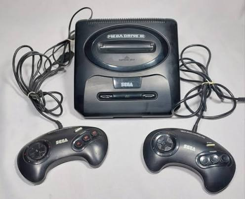
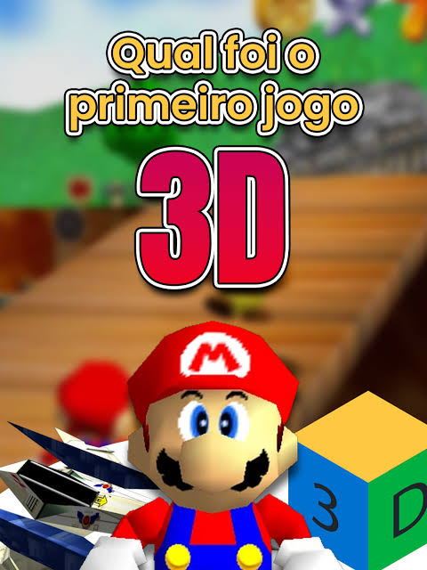
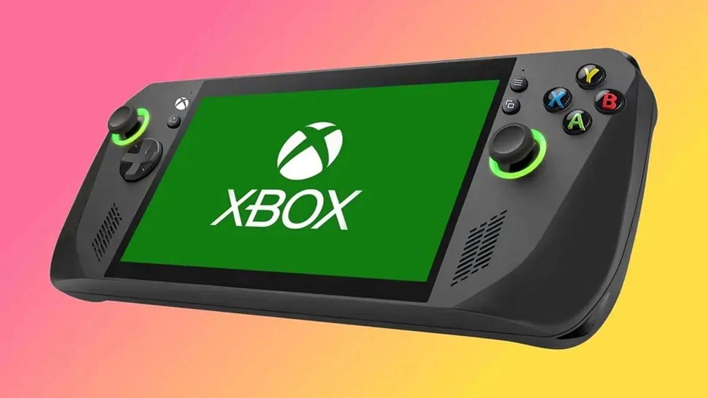

A historia dos video games
Os primeiros video games
A historia dos videogames começou em laboratórios e universidades nas décadas de 1950 e 1960. O primeiro console doméstico foi o Magnavox Odyssey, lançado em setembro de 1972 nos Estados Unidos por Ralph Baer, abrindo caminho para a popularização mundial dos jogos eletrônicos.

A era dos consoles
A era dos consoles de videogame começou em 1972 com o lançamento do Magnavox Odyssey. Desde então, a indústria evoluiu por meio de gerações marcadas por avanços tecnológicos, transições do 2D para o 3D e a chegada dos jogos conectados à internet.
A chegada dos jogos 3D
A chegada dos jogos em três dimensões (3D) transformou profundamente a indústria nos anos 1990, substituindo os pixels e os cenários planos do 2D por poligonais mundos virtuais com profundidade e nova liberdade de movimento.

Os video games atualmente
Atualmente, os videogames são uma grande indústria global de entretenimento. O mercado é liderado por consoles potentes como o PlayStation da Sony e o Xbox da Microsoft, além do modelo híbrido da Nintendo, forte crescimento dos jogos mobile, serviços de assinatura de jogos e computadores de mão especializados

Saiba mais sobre a historia dso Videogames.